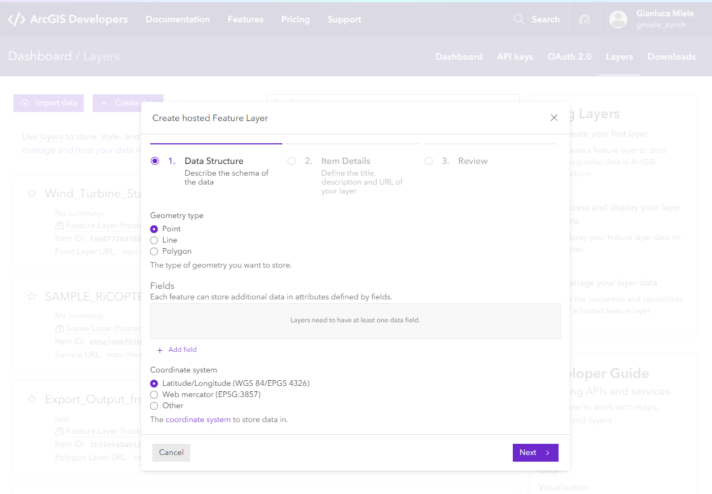
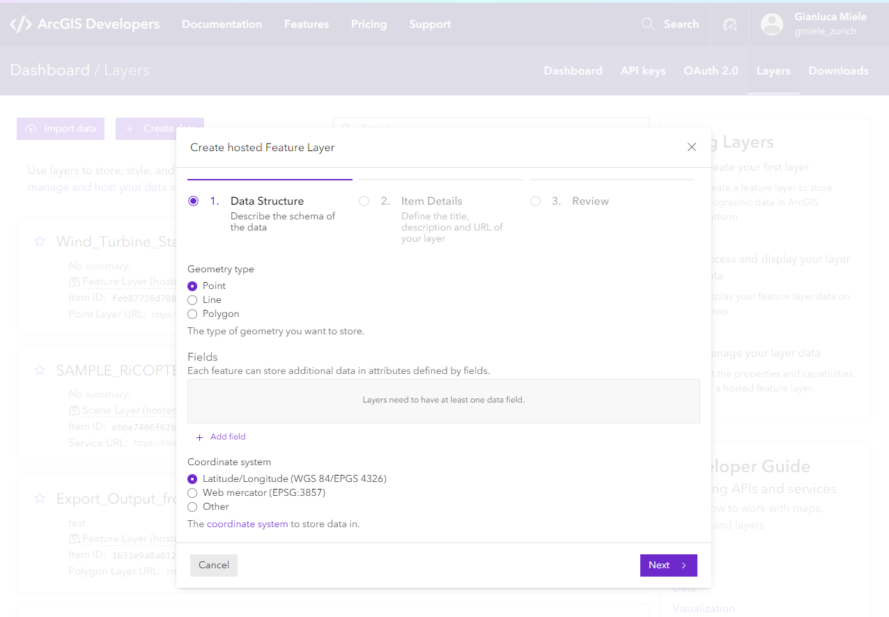
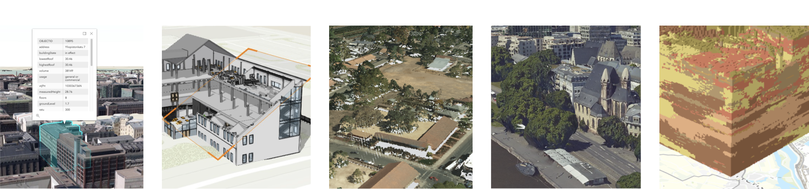

ArcGIS Maps SDK for JavaScript:
3D Visualization
Gianluca Miele, Tobias Mansfield-Williams
Slides:
https://esridevevents.github.io/arcgis-maps-sdk-for-javascript-3d-visualization/
Agenda
Core concepts
Getting started with 3D
Setting up a 3D application
<html>
<head>
<meta charset="utf-8" />
<meta name="viewport" content="initial-scale=1,maximum-scale=1,user-scalable=no" />
<title> </title>
<style>
html,
body,
#viewDiv {
padding: 0;
margin: 0;
height: 100%;
width: 100%;
}
</style>
<link rel="stylesheet" href="https://js.arcgis.com/4.26/esri/themes/light/main.css" />
<script src="https://js.arcgis.com/4.26/"></script>
<script>
require(["esri/Map", "esri/views/SceneView"], (Map, SceneView) => {
const map = new Map({
basemap: "topo-vector",
});
const view = new SceneView({
container: "viewDiv",
map: map,
});
});
</script>
</head>
<body>
<div id="viewDiv"></div>
</body>
</html>
Setting up a 3D application
Setting up a 3D application
const map = new Map({
basemap: "satellite",
ground: "world-elevation",
});
Setting up a 3D application
const map = new Map({
basemap: "oceans",
ground: "world-topobathymetry",
});
Setting up a 3D application
const view = new SceneView({
container: "viewDiv",
viewingMode: "local",
spatialReference: { wkid: 54099 },
map: map,
});
Setting up a 3D application
const clippingExtent = {
spatialReference: {
latestWkid: 3857,
wkid: 102100,
},
xmin: -13045241,
ymin: 4036811,
xmax: -13045119,
ymax: 4036890,
};
const view = new SceneView({
container: "viewDiv",
viewingMode: "local",
clippingArea: clippingExtent,
map: map,
});
Data
Types and sources of data
Data types
-
Feature Layer
- Points
- Lines
- Polygons
- Tiles (raster, vector), Elevation
- Maps, Imagery
-
Scene Layer Data (i3s open format)
- 3D Object
- Building (BIM)
- Integrated Mesh
- Point Cloud
- Voxel layer
- Point
Sources of data
ArcGIS Online
- Living Atlas
- worldwide data
- curated content
- from Esri, Esri Partners, and the GIS community
- Own data | Your organization's data
ArcGIS Enterprise
- As above...
- + on-premise
ArcGIS Developers

Sources of data
Own data
- Upload
- Publish
- Import
- Create hosted layer (e.g. Feature Service)
 

Sources of data
Feature Services
- Edit existing data
- Add new data

See more in public samples: Edit features in 3D with the Editor widget and Sketch in 3D
Sources of data
Other data sources
in formats such as:
- GeoJSON
- WFS
- CSV
- OGC features

Loading data
Load layer from URL
const layer = new FeatureLayer({
url: "https://services.arcgis.com/P3ePLMYs2RVChkJx/arcgis/rest/services/USA_Major_Cities/FeatureServer",
});
const map = new Map({
layers: [layer],
});
...or load it as a portal item
const layer = new FeatureLayer({
portalItem: {
id: "85d0ca4ea1ca4b9abf0c51b9bd34de2e",
},
});
const map = new Map({
layers: [layer],
});
Layer Symbology
Flat | Volumetric
Flat vs. Volumetric
Applying Symbology
const layer = new FeatureLayer({
url: "https://services.arcgis.com/P3ePLMYs2RVChkJx/arcgis/rest/services/USA_Major_Cities/FeatureServer",
renderer: new SimpleRenderer({
symbol: new PointSymbol3D({
symbolLayers: [
new IconSymbol3DLayer({
size: "10px",
href: "icon.png",
}),
],
}),
}),
});

3D symbology for 2D features

Points: PointSymbol3D
Flat
const renderer2D = new SimpleRenderer({
symbol: new PointSymbol3D({
symbolLayers: [
new IconSymbol3DLayer({
resource: { primitive: "circle" },
size: 3, // in pt
}),
],
}),
});
Volumetric
const renderer3D = new SimpleRenderer({
symbol: new PointSymbol3D({
symbolLayers: [
new ObjectSymbol3DLayer({
resource: {
primitive: "cone",
},
width: 50000, // in meters
}),
],
}),
});
See more in a public sample: Thematic multivariate visualization (3D)
Lines: LineSymbol3D
Flat
let symbol2D = new LineSymbol3D({
symbolLayers: [
new LineSymbol3DLayer({
material: {
color: "blue",
},
size: 5, // in pt
join: "miter",
cap: "round",
}),
],
});
Volumetric
let symbol3D = new LineSymbol3D({
symbolLayers: [
new PathSymbol3DLayer({
profile: "quad",
material: {
color: "blue",
},
width: 5, // in meters
height: 30, // in meters
join: "miter",
cap: "round",
anchor: "bottom",
profileRotation: "all",
}),
],
});
See more in a public sample: Path visualization in 3D
Polygons: PolygonSymbol3D
Flat
const renderer2D = new SimpleRenderer({
symbol: new PolygonSymbol3D({
symbolLayers: [new FillSymbol3DLayer()],
}),
});
Volumetric
const renderer3D = new SimpleRenderer({
symbol: new PolygonSymbol3D({
symbolLayers: [new ExtrudeSymbol3DLayer()],
}),
});
See more in a public sample: Data-driven extrusion
Example: Extruding building footprints
const symbol = new PolygonSymbol3D({
symbolLayers: [
new ExtrudeSymbol3DLayer({
material: {
color: color,
},
edges: {
type: "solid",
color: "#999",
size: 0.5,
},
}),
],
});
const renderer = new UniqueValueRenderer({
defaultSymbol: symbol,
defaultLabel: "Other",
field: "TYPE",
uniqueValueInfos: [
...
],
visualVariables: [
{
type: "size",
field: "HEIGHT",
},
],
});
Layer symbology: 3D-specific data types
Scene Layer
3D Object Scene Layer: MeshSymbol3D
Add textured layer
const layer = new SceneLayer({
portalItem: {
id: "fdfa7e3168e74bf5b846fc701180930b",
},
});
map.add(layer);
Color by attributes instead
const thematicRenderer = new SimpleRenderer({
symbol: new MeshSymbol3D({
symbolLayers: [
new FillSymbol3DLayer({
material: {
color: "#ffffff",
colorMixMode: "replace",
},
}),
],
visualVariables: [{
type: "color",
field: "solarAreaSuitableM2",
stops: [
{
value: 1,
color: "#FFFCD4",
},
{
value: 1000,
color: [153, 83, 41],
},
],
}],
}),
});
layer.renderer = thematicRenderer;
Color by attributes instead
const thematicRenderer = new SimpleRenderer({
symbol: new MeshSymbol3D({
symbolLayers: [
new FillSymbol3DLayer({
material: {
color: "#ffffff",
colorMixMode: "replace",
}
}),
],
visualVariables: [{
type: "color",
field: "solarAreaSuitableM2",
stops: [
{
value: 1,
color: "#FFFCD4",
},
{
value: 1000,
color: [153, 83, 41],
},
],
}],
}),
});
layer.renderer = thematicRenderer;
Add edges
symbolLayer.edges = new SolidEdges3D({
color: [0, 0, 0, 0.6],
size: 1,
});
See more in public samples:
Coloring options for textured buildings
and
Add edges to a SceneLayer
Building Scene Layer
Add layer
const buildingLayer = new BuildingSceneLayer({
url: "https://tiles.arcgis.com/tiles/V6ZHFr6zdgNZuVG0/arcgis/rest/services/BSL__4326__US_Redlands__EsriAdminBldg_PublicDemo/SceneServer",
});
map.add(layer);
Color based on model name
const columnsLayer = buildingLayer.allSublayers
.find(l => l.modelName === "StructuralColumns");
columnsLayer.renderer = new SimpleRenderer({
symbol: new MeshSymbol3D({
symbolLayers: [
new FillSymbol3DLayer({
material: {
color: "red",
},
}),
],
}),
});
See more in a public sample: BuildingSceneLayer with Slice widget
Point Cloud Layer
Add layer
const pcLayer = new PointCloudLayer({
url: "https://tiles.arcgis.com/tiles/z2tnIkrLQ2BRzr6P/arcgis/rest/services/SONOMA_AREA1_LiDAR_RGB/SceneServer",
});
map.add(pcLayer);
Color by LAS classification
pcLayer.renderer = new PointCloudUniqueValueRenderer({
field: "CLASS_CODE",
colorUniqueValueInfos: [
{
values: ["1"],
label: "Unclassified",
color: [178, 178, 178],
},
{
values: ["2"],
label: "Ground",
color: [168, 112, 0],
},
{
values: ["5"],
label: "High Vegetation",
color: [205, 245, 121],
},
{
values: ["6"],
label: "Building",
color: [229, 75, 65],
},
{
values: ["7"],
label: "Low Point(noise)",
color: [229, 0, 0],
},
{
values: ["9"],
label: "Water",
color: [0, 92, 230],
},
],
pointSizeAlgorithm: {
type: "fixed-size",
useRealWorldSymbolSizes: false,
size: 3,
},
pointsPerInch: 35,
});
See more in public samples:
PointCloudLayer - toggle renderers
and
PointCloudLayer - intensity color modulation
Integrated Mesh Layer
Add layer
const layer = new IntegratedMeshLayer({
url: "https://tiles.arcgis.com/tiles/cFEFS0EWrhfDeVw9/arcgis/rest/services/Utrecht_Buildings_2021/SceneServer",
});
map.add(layer);
Overlay with polygon layer
const polygonLayer = new FeatureLayer({
url: "https://services2.arcgis.com/cFEFS0EWrhfDeVw9/arcgis/rest/services/FloodingDataUtrecht/FeatureServer/1",
elevationInfo: {
mode: "on-the-ground",
},
opacity: 0.5,
});
See more in a public sample: IntegratedMeshLayer
Voxel Layer
Add layer
const layer = new VoxelLayer({
url: "https://tiles.arcgis.com/tiles/V6ZHFr6zdgNZuVG0/arcgis/rest/services/Soil_data_in_southeast_of_Netherlands_WSL1/SceneServer",
});
map.add(layer);
See more in public sample: VoxelLayer Discrete Variable
Connect With Us On Social
And Join the Conversation Using #EsriDevSummit
![]()
![]()